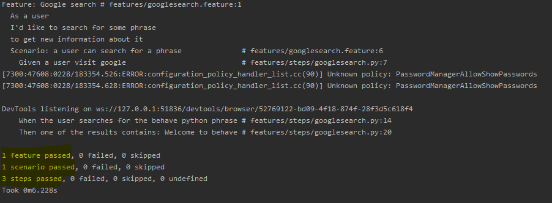

Behave Driven Python
Web application testing with behave
Who AM I?
- Python developer
- Scrum Master
- Tech and soft skills trainer
- Creative Mom
- Visual Thinking enthusiast
What are we going to work on today?
BDD - let's grab a little context
- What is behavior and BDD?
- Benefits of BDD
- Python BDD test frameworks
Behave Test Framework
- Feature files
- Steps implementation
- Context
- Step Data
- Multiline text
- Step parameters
- Scenario outline
- Hooks
- Fixtures
- Tags
Summary - put it all together
- Full example
- Reports generation with Allure
- Practice
Workshop goals
After the training:
- You will know the BDD concept and its advantages
- You will know how to work with `behave` framework
- You will be able to create tests based on gained knowledge
Behavior Driven Development
What is behavior?
Where does TDD fall?
- What to test?
- How much to test?
- How to understand failing tests?
“Behaviour” is a more useful word than “test”
`WHAT` more than `HOW`
Given some initial context (the givens),
When an event occurs,
Then ensure some outcomes.
BDD emphasizes the client's perspective
What is BDD?
BDD is a second-generation, outside-in, pull-based, multiple-stakeholder, multiple-scale, high-automation, agile methodology. It describes a cycle of interactions with well-defined outputs, resulting in the delivery of working, tested software that matters.
Dan North - introducing BDDBenefits
- Allows everybody involved to write tests not just coders
- Supports collaboration and automation
- It is specification by example
- Encourage thinking about the application in a natural consistent language
- Behavior specs becomes requirements, ACC and acceptance tests (all in one)
- BDD is a refinement of Agile process
Python BDD test frameworks
- Behave
- pythest-bdd
- radish
- lettuce
Python BDD framework comparison - Automation Panda
Installation
Aga-Ma/behave_workshop/installation.mdBehave Test Framework
Project structure
Feature Files
features/google.feature
Feature: Google search
As a user
I'd like to search for some phrase
to get new information about it
Scenario: a user can search for a phrase
Given a user visit google
When the user searches for the phrase
Then one of the results contains expected result
behave_demo/releases/tag/featurefile
Let's finally run it!

...and now let's fix it
Python comes into play
UI testing with Selenium
Page Object Model
behave_demo/releases/tag/pom
features/steps/pages/BasePage.py
class BasePage(object):
def __init__(self, driver):
self.driver = driver
self.timeout = 30
def find_element(self, *loc):
return self.driver.find_element(*loc)
def load(self, url):
self.driver.get(url)
features/steps/pages/SearchPage.py
from selenium.webdriver.common.by import By
from selenium.webdriver.common.keys import Keys
from .BasePage import BasePage
class SearchPage(BasePage):
SEARCH_INPUT = (By.XPATH, "//input[@name='q']")
def __init__(self, context):
super().__init__(context.driver)
def search(self, phrase):
search_input = self.driver.find_element(*self.SEARCH_INPUT)
search_input.send_keys(phrase + Keys.RETURN)
features/steps/pages/ResultsPage.py
from selenium.webdriver.common.by import By
from .BasePage import BasePage
class ResultPage(BasePage):
@classmethod
def phrase_results(cls, phrase):
xpath = f"//*[contains(text(), '{phrase}')]"
return By.XPATH, xpath
def __init__(self, context):
super().__init__(context.driver)
def phrase_result_count(self, phrase):
phrase_results = self.driver.find_elements(*self.phrase_results(phrase))
return len(phrase_results)
Context
Steps implementation
First let's maybe look for something meaningful
features/google.feature
Feature: Google search
As a user
I'd like to search for some phrase
to get new information about it
Scenario: a user can search for a phrase
Given a user visit google
When the user searches for the behave python phrase
Then one of the results contains: Welcome to behave
features/steps/googlesearch.py
from behave import given, when, then
from selenium import webdriver
from features.steps.pages import *
@given('a user visit google')
def step_impl(context):
context.driver = webdriver.Chrome("C:/drivers/chromedriver.exe")
page = SearchPage(context)
page.load('http://www.google.com')
@when('the user searches for the behave python phrase')
def step_impl(context):
page = SearchPage(context)
page.search('behave python')
@then('one of the results contains: Welcome to behave')
def step_impl(context):
page = ResultPage(context)
results = page.phrase_result_count('Welcome to behave')
context.driver.quit()
assert results > 0
Let's do some precheck with 'behave --dry-run'

Looks promising. Doesn't it?
behave_demo/releases/tag/steps
And run!
Step Parameters
features/google.feature
Feature: Google search
As a user
I'd like to search for some phrase
to get new information about it
Scenario: a user can search for a phrase
Given a user visit google
When the user searches for the "behave python" phrase
Then one of the results contains: "Welcome to behave"
features/steps/googlesearch.py
from behave import given, when, then
from selenium import webdriver
from features.steps.pages import *
@given('a user visit google')
def step_impl(context):
context.driver = webdriver.Chrome("C:/drivers/chromedriver.exe")
page = SearchPage(context)
page.load('http://www.google.com')
@when('the user searches for the "{search}" phrase')
def step_impl(context, search):
page = SearchPage(context)
page.search(search)
@then('one of the results contains: "{expected_result}"')
def step_impl(context, expected_result):
page = ResultPage(context)
results = page.phrase_result_count(expected_result)
context.driver.quit()
assert results > 0
behave_demo/releases/tag/stepparameters
Hooks
features/steps/googlesearch.py
@given('a user visit google')
def step_impl(context):
context.driver = webdriver.Chrome("C:/drivers/chromedriver.exe")
page = SearchPage(context)
page.load('http://www.google.com')
@then('one of the results contains: "{expected_result}"')
def step_impl(context, expected_result):
page = ResultPage(context)
results = page.phrase_result_count(expected_result)
context.driver.quit()
assert results > 0
features/steps/googlesearch.py
from behave import given, when, then
from features.steps.pages import *
@given('a user visit google')
def step_impl(context):
page = SearchPage(context)
page.load('http://www.google.com')
@when('the user searches for the "{search}" phrase')
def step_impl(context, search):
page = SearchPage(context)
page.search(search)
@then('one of the results contains: "{expected_result}"')
def step_impl(context, expected_result):
page = ResultPage(context)
results = page.phrase_result_count(expected_result)
assert results > 0
features/environment.py
from selenium import webdriver
def before_scenario(context, scenario):
context.driver = webdriver.Chrome("C:/drivers/chromedriver.exe")
context.driver.implicitly_wait(10)
def after_scenario(context, scenario):
context.driver.quit()
behave_demo/releases/tag/hooks
Fixtures
features/fixtures.py
from selenium import webdriver
from behave.fixture import fixture
@fixture
def browser_chrome(context):
context.driver = webdriver.Chrome("C:/drivers/chromedriver.exe")
context.driver.implicitly_wait(10)
yield context.driver
context.driver.quit()
features/environment.py
from behave import use_fixture
from fixtures import browser_chrome
def before_tag(context, tag):
if tag == "fixture.browser.chrome":
use_fixture(browser_chrome, context)
features/googlesearch.feature
@fixture.browser.chrome
Feature: Google search
As a user
I'd like to search for some phrase
to get new information about it
Scenario: a user can search for a phrase
Given a user visit google
When the user searches for the "behave python" phrase
Then one of the results contains: "Welcome to behave"
behave_demo/releases/tag/fixtures
Step Data
Multiline text
Tables of data
Execute step in a step
Scenario Outline
Summary
The DuckDuckGo example
Report generation
Debugging
Practice
https://github.com/Aga-Ma/behave_workshop